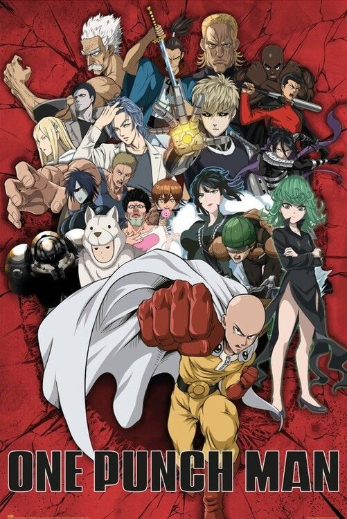

| AnimeSA | Home Top Anime Genres About |
A hero who can defeat any enemy with a single punch struggles with boredom and searches for a worthy opponent.

Saitama is an ordinary man who trained so hard that he became incredibly powerful.
Now able to defeat any enemy with one punch, he becomes bored and searches for strong opponents who can challenge him.
Contains intense fight scenes and cartoon-style violence.
One Punch Man became extremely popular for: